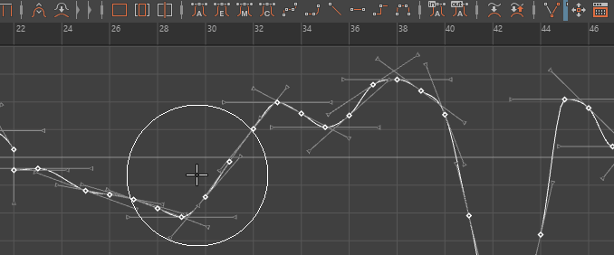

使用“缓冲区曲线”(Buffer Curve)查看“平滑曲线雕刻”(Smooth Curve Sculpting)工具的效果。
编辑曲线时查看原始动画和结果动画
- 在编辑曲线之前，请在“曲线图编辑器”(Graph Editor)中选择它。
- 执行下列操作之一：
- 从菜单栏中选择“曲线 > 缓冲区曲线 > 快照”(Curves > Buffer Curve > Snapshot)。
在图表视图中将显示一条代表当前曲线的灰色曲线。
- 编辑上色的曲线。
- 通过执行下列操作，可以在编辑过的曲线与原始曲线（缓冲区快照）之间切换：
- 从菜单栏中选择“曲线 > 交换缓冲区曲线”(Curves > Swap Buffer Curve)。
- 单击工具栏中的“交换缓冲区曲线”(Swap Buffer Curve)按钮 。
固定通道
也可以固定通道，以便其曲线始终显示在图表视图中，而与所选择的内容无关。
在图表视图中固定和取消固定通道
- 执行下列操作之一：
- 单击每个通道名称旁边显示的“固定”() 或“取消固定”() 图标。
- 在“曲线图编辑器”(Graph Editor)菜单栏中，选择“曲线 > 固定通道”(Curves > Pin Channel)或“曲线 > 取消固定通道”(Curves > Unpin Channel)。